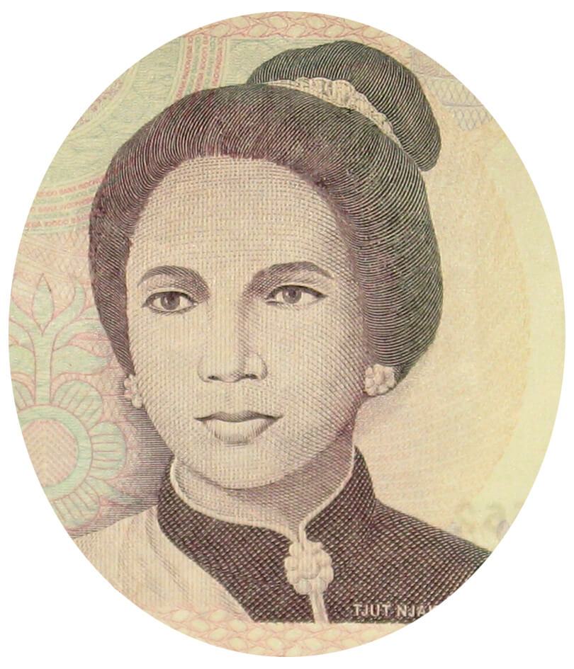

| DATA DIRI | KETERANGAN |
| Nama lengkap | Tjoet Njak Dhien |
| Tempat Tanggal Lahir | Aceh Selasa, 1848 |
| Agama | Islam |
| Suami | Teuku Cek Ibrahim |
| Anak | Cut Gambang |
Semangat Cut Njak Dien untuk melawan pasukan kolonial Belanda mulai bangkit. Peristiwa gugurnya Teuku Cek Ibrahim Lamnga dalam peperangan melawan Belanda pada tanggal 29 Juni 1878 di Sela Glee Tarun semakin menyulut kemarahan dan keteguhan wanita pemberani ini terhadap kaum Kolonial tersebut.Kendati demikian, Cut Nyak Dien melanjutkan perjuangan dengan semangat membara. Kebetulan saat upacara penguburan suaminya, ia bertemu dengan Teuku Umar yang lantas menjadi suami sekaligus rekan perjuangan dalam memperjuangkan tanah rencong. Awalnya Cut Nyak Dien menolak pinangan Teuku Umar, namun pada akhirnya ia setuju untuk menikah dengan pria yang masih mempunyai garis kekeluargaan dengan dirinya ini setelah Teuku Umar memenuhi keinginannya untuk ikut turun ke medan perang.Cut Nyak Dien sangat ingin mengusir Belanda dari bumi Aceh karena telah meresahkan penduduk dan mengusik keyakinan mereka. Dimulai dari awal lagi, mereka menggalang kembali kekuatan dan mengumpulkan segenap pejuang Aceh yang lainnya. Cut Nyak Dien pun gencar melakukan serangan dengan sistem gerilya, sehingga bisa membuat panik pasukan Belanda yang berada di Aceh. Dalam masa perjuangan tersebut, Cut Nyak Dien sempat mendapatkan umpatan dari Cut Nyak Meutia karena strategi suaminya Teuku Umar yang berpura-pura menyerahkan diri pada belanda dan bekerja sama dengan mereka.Mestinya kalau komunikasi berjalan dengan baik, Cut Nyak Meutia tidak perlu melakukan hal itu, karena Teuku Umar hanya bersiasat saja. Setelah rencana awal telah terpenuhi, yakni mendapatkan banyak senjata dari pasukan Belanda, Teuku Umar kembali pada Cut Nyak Dien dan para pejuang Aceh lainnya.
Belanda yang merasa telah dikhianati oleh Teuku Umar melancarkan serangan besar-besaran untuk memburu pasangan suami-istri ini. Teuku Umar pun akhirnya gugur dalam pertempuran di Meulaboh pada tanggal 11 Februari 1899.Sementara itu, pasukan Belanda mengetahui dengan persis bahwa pasukan Cut Nyak Dien melemah dan hanya bisa menghindar dalam tekanan. Akibatnya, karena usis yang sudah mulai renta kondisi fisik dan kesehatan Cut Nyak Dien pun menurun, tetapi pertempuran tetap ia lakukan.Melihat kondisi seperti itu, panglima perangnya, Pang Laot Ali, menawarkan menyerahkan diri ke Belanda. Tapi Cut Nyak Dien tetap teguh pendirian dan menegaskan untuk terus bertempur.Akhirnya dalam kurun waktu singkat Cut Nyak Dien berhasil ditangkap dan untuk menghindari pengaruhnya terhadap masyarakat Aceh, ia diasingkan pada tanggal 11 Desember 1905 di Pulau Jawa, tepatnya ke Sumedang , Jawa Barat.
Kisah Perjuangan Cut Nyak Dien membuat seorang penulis Belanda, Ny Szekly Lulof, kagum dan menggelarinya sebagai “Ratu Aceh”. Atas teladan, perjuangan dan pengorbanannya yang begitu besar kepada negara, Cut Nyak Dien dinobatkan menjadi pahlawan Kemerdekaan Nasional. Penobatan tersebut dikuatkan dengan SK Presiden RI No.106 Tahun 1964, tanggal 2 Mei 1964.
Demikianlah biografi Cut Nyak Dien yang dapat kita jadikan teladan dalam kecintaan terhadap bangsa. Semoga informasi ini bermanfaat. Terima Kasih!!